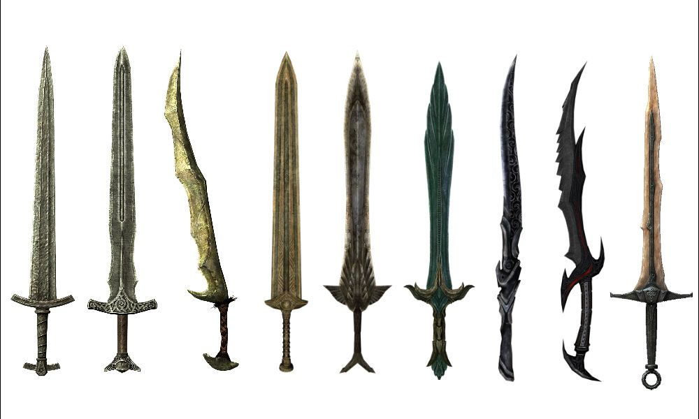
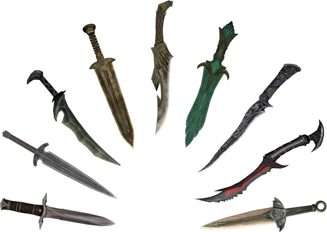
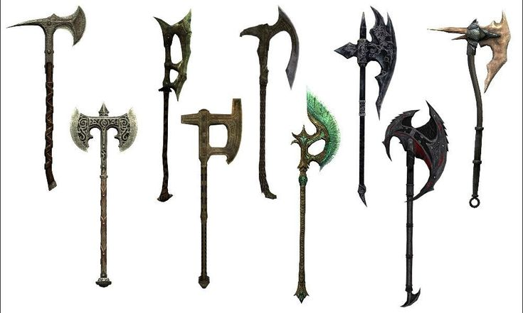
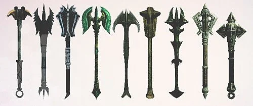
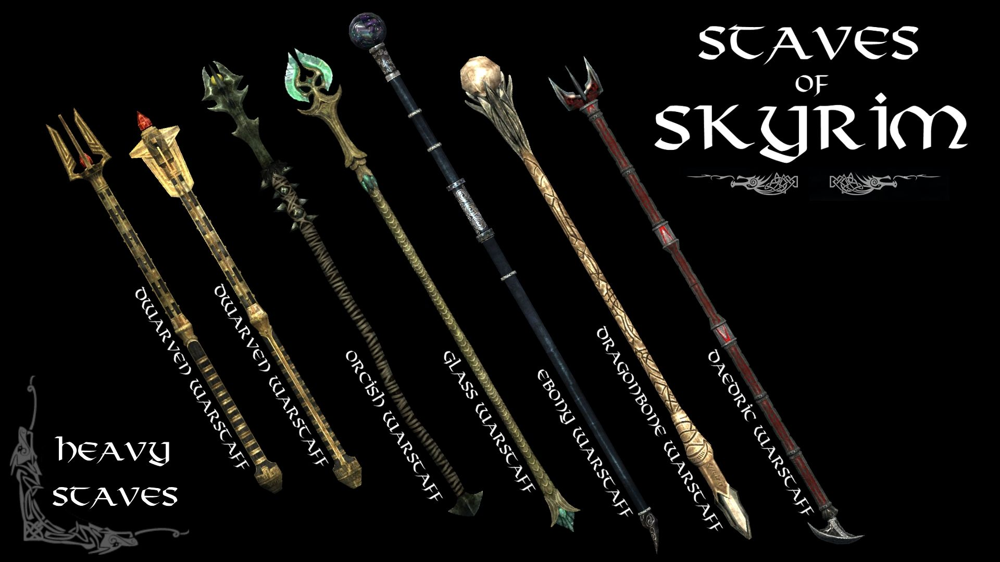
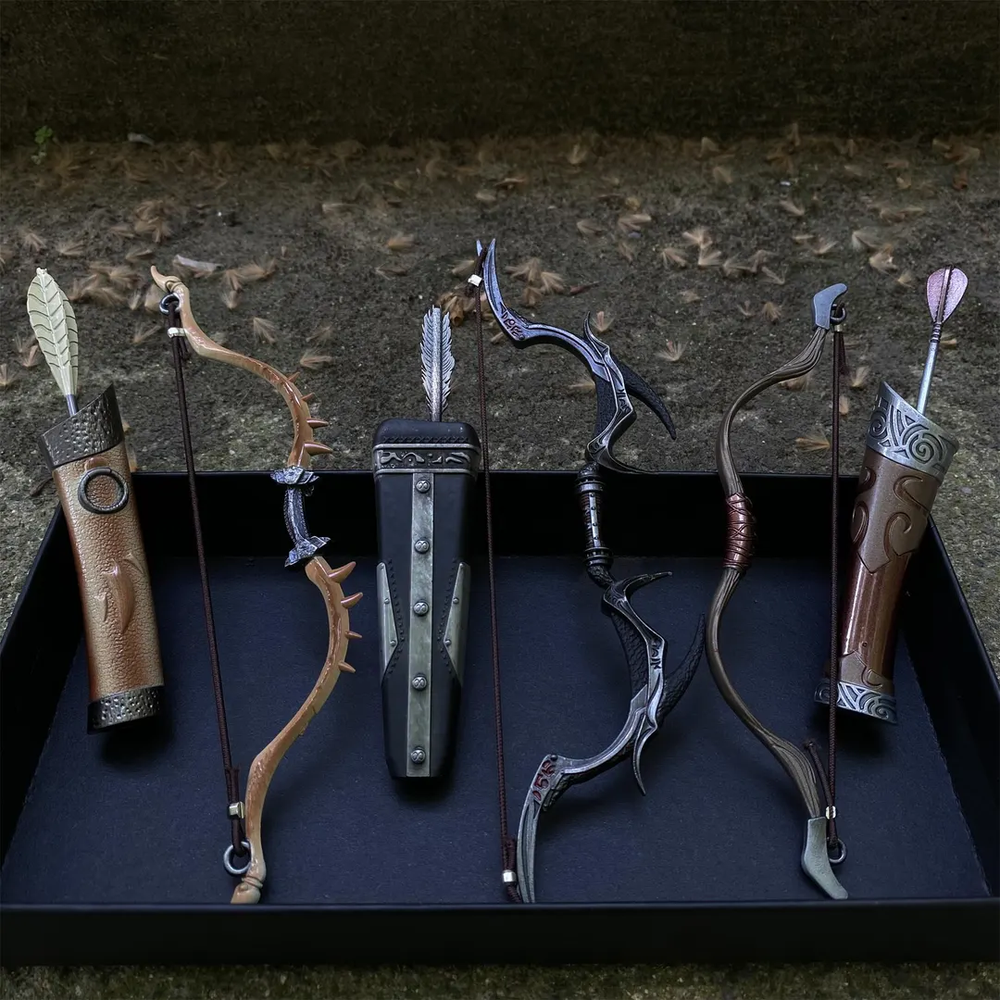

Espadas de Uma Mão
Rápidas e versáteis, permitem usar escudo, magia ou outra arma na mão secundária.
Em Skyrim, cada arma muda a forma como você enfrenta uma batalha. Escolha entre velocidade, força, alcance e magia para criar um estilo que combine com seu personagem.

Rápidas e versáteis, permitem usar escudo, magia ou outra arma na mão secundária.

Leves e muito rápidas, são ideais para ataques furtivos e golpes pelas costas.

Armas de uma mão com bom dano e efeitos de sangramento.

Mais lenta e pesada, causa grande dano contra inimigos com armadura.

Fontes portáteis de feitiços que usam cargas próprias em vez de consumir Magicka.

Armas de distância ideais para iniciar combates de longe e atacar furtivamente.